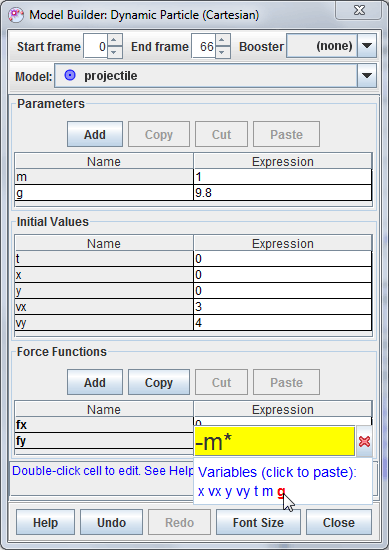
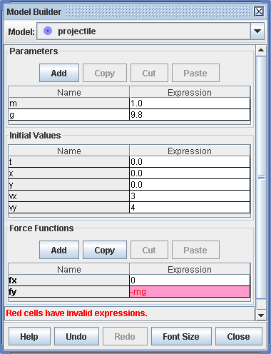
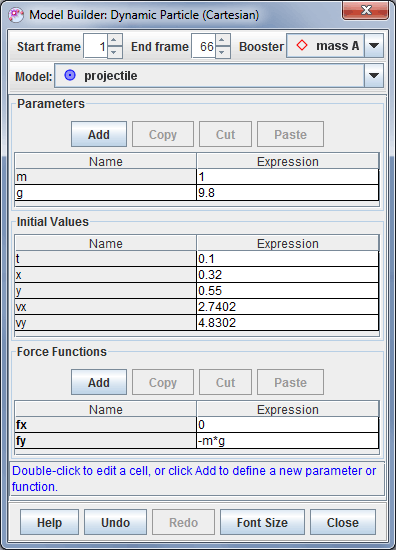
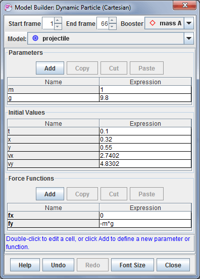

A particle model track is a mathematical model of a point mass. The step positions of the particle are determined by the parameters of the model rather than being marked with the mouse.
There are two types of particle models: kinematic and dynamic. A kinematic particle defines position functions of time (Figure 4), while a dynamic particle defines force functions and initial conditions for numerical ODE solvers (Figure 1). Dynamic particles may be defined in either cartesian or polar coordinates.
Model particles have a start and end frame that define the frames of the video in which they are drawn. This makes it possible to define multiple models that apply at different times in the same video.
A dynamic particle may use a booster point mass to set its initial position and velocity. Boosters can be quite powerful--for more information, see Boosting dynamic particles.
A particle model has a settable mass and generates motion data and vectors just like any other point mass. See point mass for additional information.
Particle model properties are displayed and edited using the Model Builder tool. To use the builder, choose Model Builder... from the model's track menu.
Functions and parameters are defined by entering expressions that are "parsed" (interpreted) by the OSP parser. The values of parameters are constants while those of functions depend on input variables such as x, y, t, etc. The parser recognizes the following elements:
| abs(x) | acos(x) | acosh(x) | asin(x) | asinh(x) | atan(x) | atanh(x) | atan2(x,y) | ceil(x) | cos(x) |
| cosh(x) | exp(x) | frac(x) | floor(x) | int(x) | log(x) | max(x,y) | min(x,y) | mod(x,y) | random(x) |
| round(x) | sign(x) | sin(x) | sinh(x) | sqr(x) | sqrt(x) | step(x) | tan(x) | tanh(x) |
Model Builder displays model functions along with associated parameters and initial conditions in tables with Name and Expression columns as shown in Fig. 1. The name of the model is shown in a spinner field above the tables.
To edit a name or expression, double-click its table cell (gray cells cannot be edited). Names must be unique and can contain no spaces or mathematical symbols. Expressions must be valid mathematical expressions parsable by the OSP parser.
To create a new parameter or support function, click the appropriate Add button.
When editing an expression, the names of all available variables are listed in blue directly under the popup editor as shown in Fig. 2. To insert a variable directly from the list, move the mouse cursor over it until it turns red and then click.
Variables for parameter expressions include only other parameters, while variables for function expressions include independent variables (e.g., x, y, t, etc), parameters and support function names. In the example shown, the "fy" function may depend on any or all of the variables x, vx, y, vy, t, m, g. The entry "-m*g" is thus a valid expression.

If an invalid expression is entered into a cell the cell turns red and an error message is displayed in the status bar. In Figure 3, the expression "-mg" is invalid since the multiplication operator (*) has been omitted. Circular references also result in an error condition.

Model Builder includes several features designed to help build, modify and compare models quickly:
A booster is a separate point mass that sets the position and velocity of a particle model to those of the booster at the particle's start frame. If the booster's position or velocity changes, the particle's initial conditions are automatically updated. Note: if the booster's position is not defined at the particle's start frame, it has no effect. If the booster's position is defined but not its velocity, then only the particle's position is set.
There are at least 2 convenient ways to use boosters:
To define a booster for a dynamic particle, select it from the dropdown Booster list in the model builder as shown in Fig. 5. The particle's initial conditions are automatically updated to match the motion of the booster at the particle's start frame.

 
